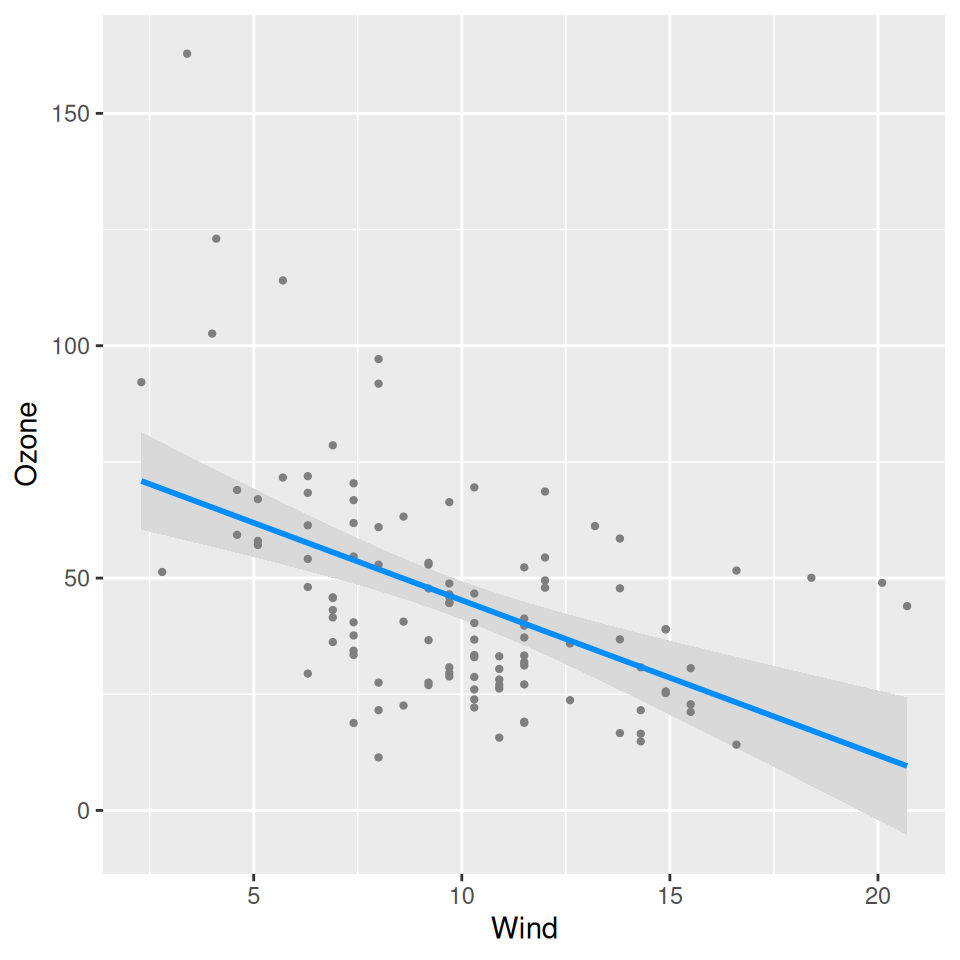
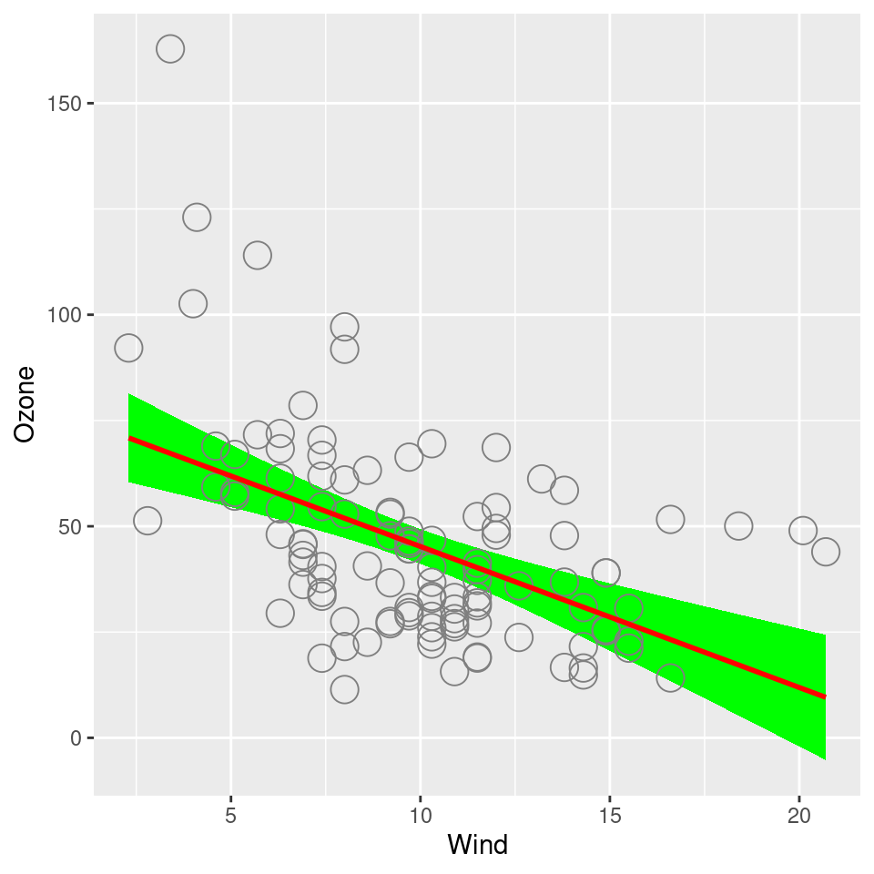
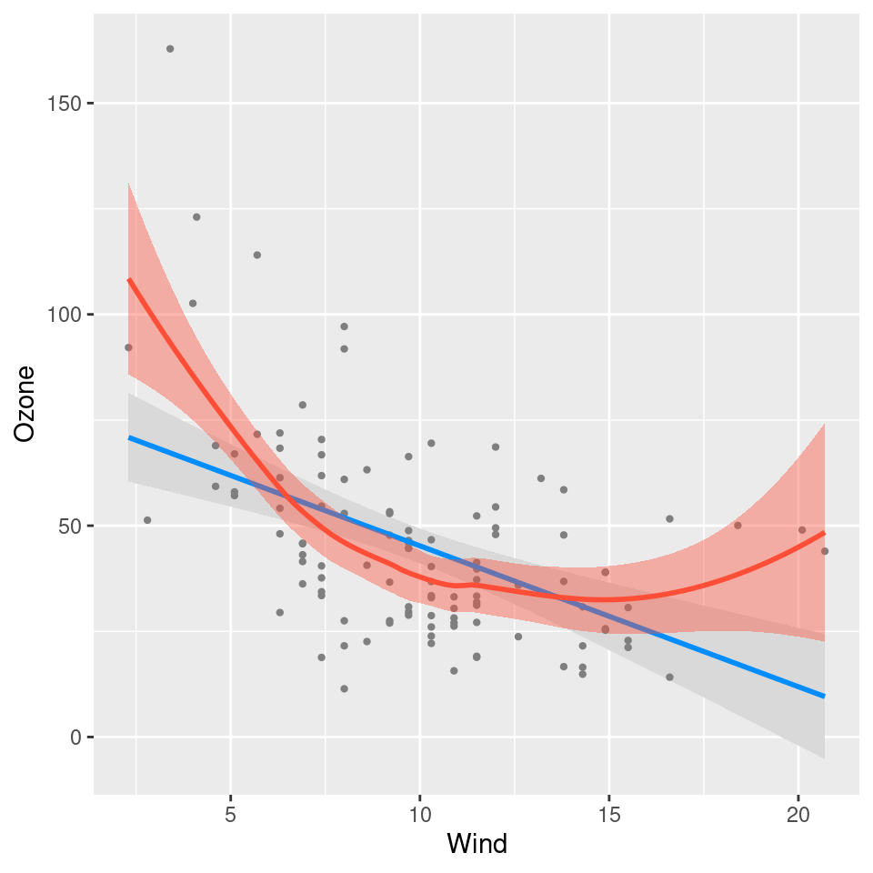
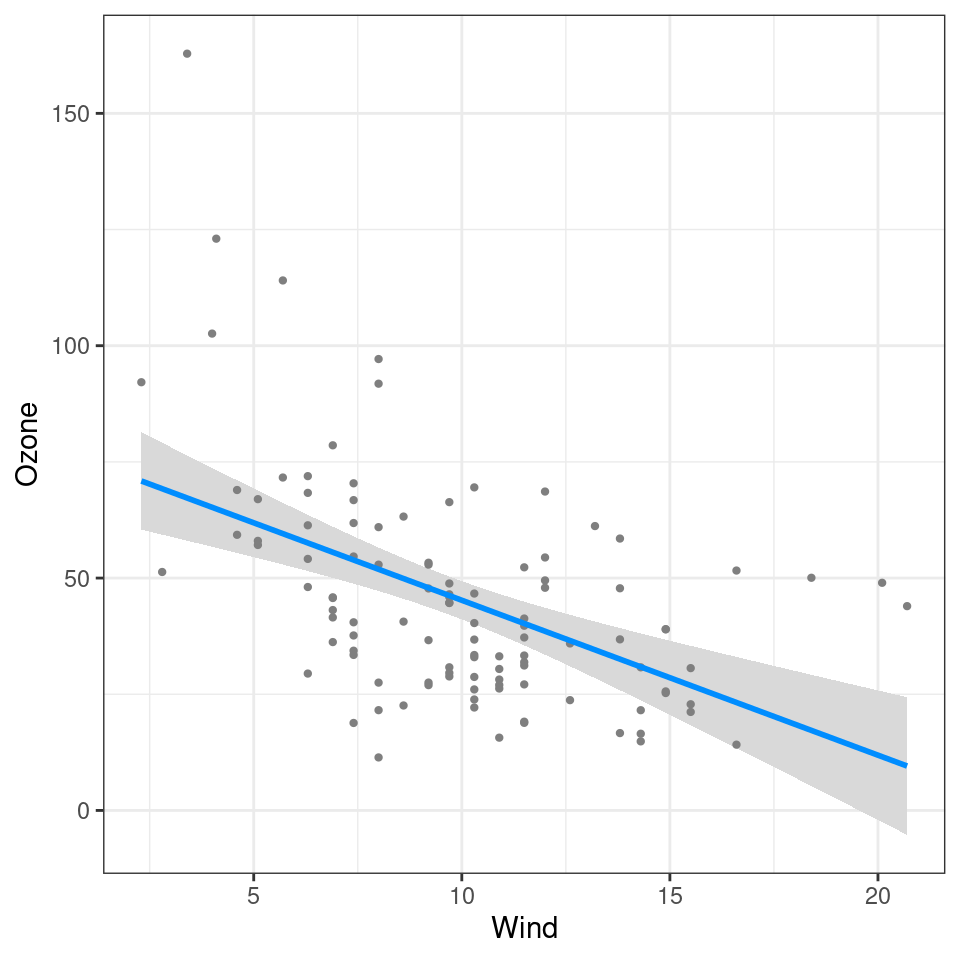

By default, visreg will use base R graphics as the
engine; however, you also have the option of using ggplot2
as the engine. For example:

Graphical options regarding the appearance of points, lines, and bands are specified in the same way as with base R:
visreg(fit, "Wind", gg=TRUE, line=list(col="red"),
fill=list(fill="green"),
points=list(size=5, pch=1))
Note that visreg returns a gg object, and
therefore, you can use ggplot2 to add additional layers to
the graph. For example, we could add a smoother:
visreg(fit, "Wind", gg=TRUE) + geom_smooth(method="loess", col='#FF4E37', fill='#FF4E37')
# `geom_smooth()` using formula = 'y ~ x'
Or we could modify the theme:
visreg(fit, "Wind", gg=TRUE) + theme_bw()